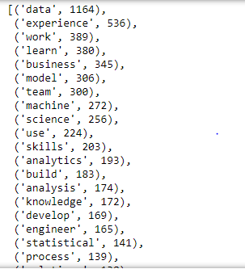

KeyWord Finder: Data scraping and natural language processing to find keywords in job posts
date posted: 2019-05-15
I am not a guy who inputs time into something that I do not find interst in, one of them is reading through bunch of job descriptions and trying to find out what employers are looking for. This project was inspired to simply serve my laziness. Hope it helps other lazy people like me. Main goal is going through most recent job postings and find most frequently occuring keywords. Not all keywords however only keywords that are technical skills such as: Python, data, C++, etc.
Due to lengthy information I will break it down into data scraping section and text classification section so feel free to take information you only want.
Data scraping step:
Data will be scraped from glassdoor. Tried to work with Linkedin however they do not allow individuals to scrape their data so if you want to work with linkedin data, be prepared to get sued.
As always we import all our dependencies.
from splinter import Browser
from bs4 import BeautifulSoup
import nltk
import matplotlib.pyplot as plt
import os
import pymongo
import pandas as pd
import re
import seaborn as sns
import time
Then set up path for chromedriver. It can be downloaded from: http://chromedriver.chromium.org/downloads
Check the version of chromedriver before downloading as each version serves specific version of chrome.
executable_path = {'executable_path': "chromedriver.exe"}
browser = Browser('chrome', **executable_path, headless=False)
url = "https://www.glassdoor.ca/index.htm"
browser.visit(url)
Notice I gave reference to variable named browser thus browser is used to perform activities.
First, visit the glassdoor website then ask the user what job they are looking for and store it into a variable. Second find search bar for job title and insert variable(user input) we just stored. This is same as human being filling the search bar.
In this example inputs will be: job = "Data Scientist", location = "Singapore"
browser.visit(url)
print("What job are you looking for?")
job = input()
job_type = browser.find_by_id("KeywordSearch")
job_type.fill(job)
If you are not familiar with html, everything on a webpage is stored in different, appropriate html tag. In this case job title search bar is html input tag with id named KeywordSearch. You can verify by pressing f12 on the website, click elements column and press mouse logo then drag your mouse to search bar. This will allow you to view all html tags that you hover over.
Similarily, do the same for location search. Find id of search bar then click it.
print("Where do you want to find your job?")
job_location = input()
location = browser.find_by_id("LocationSearch")
location.fill(job_location)
browser.find_by_id("HeroSearchButton").click()
Create a function we will use to scrape each page. It is not getting called yet, however will be called within a for loop.
def scrape():
# Getting html of the page then find all lists with class jl.
# jobs variable now contain all job listing's html tags in list form.
html = browser.html
soup = BeautifulSoup(html, "html.parser")
jobs = soup.find_all("li", class_="jl")
# Loop through each job listing
for job in jobs:
# For now we are scraping preview
# Store all info into a appropriate storage.
position.append(job.find("div", class_="jobTitle").a.text)
# name of company and location come in a form like ex: Tommy - Singapore
# so we split along "-", strip white spaces and append to storage
comp_loc = job.find("div", class_="empLoc").div.text
comp, loc = comp_loc.split("–")
company.append(comp.strip())
location.append(loc.strip())
# click job listing to see full version.
browser.click_link_by_href(job.find("a", class_="jobLink")["href"])
# from current html since if you click job_posting it render new html
html = browser.html
soup = BeautifulSoup(html, "html.parser")
job_desc.append(soup.find("div", class_="desc").text)
# Since chromedriver clicks each job listing so quickly sometimes it will miss it therefore
give it some time.
time.sleep(3)
From the bottom of first page find all list that allow us to move through pages
html = browser.html
soup = BeautifulSoup(html, "html.parser")
result = soup.find("div", class_="pagingControls").ul
# Note that find_all grab all li tags and store each into list as one item.
pages = result.find_all("li")
Create storage to store data, storage we append to in scrape function
position = []
exp_level = []
company = []
employment_type = []
location = []
job_desc = []
Call scrape function within a for-loop that loops over first 5 pages.
for page in pages:
scrape()
# for each li tag, run if "a" tag exists. Clicking current page will give error because current pages do not have "a" tag
if page.a:
# Stop if you reach "Next" since we only want first 5 pages.
if not page.find("li", class_="Next"):
try:
browser.click_link_by_href(page.a['href'])
except:
print("This is the last page")
We have appended all job description into job_desc list where all the words in job description is one item. One problem is some of job descriptions are scraped more than once and some are not scraped. If you do page by page, on average it has 2 duplicates and others seem fine.
Remove duplicates
job_desc = set(job_desc)
job_desc = list(job_desc)
Set considers distinct items therefore all duplicates are removed then change it back to list
Text classification step:
As always our first job is cleaning the data. In data science world there are alot of job description that join similar technical skills such as "sql/database", "sql/nosql", "C/C++", and so on. We want them separated so lets split along "/" and join it back with a comma which will be separated later.
for job in job_desc:
", ".join(job.split('/'))
job_desc = [", ".join(job.split('/')) for job in job_desc]
Now using nltk we imported in the beginning lowercase all words because we don't want our computer to think SQL and sql mean different things.
tok = [nltk.word_tokenize(job.lower()) for job in job_desc]
If you are unfamiliar with natural language processing concept I recommend read THIS before moving on.
Moving on, use stopwords corpus to filter out stopwords and ignore words less than length 2.
# import corpus from nltk.
from nltk.corpus import stopwords
stop = stopwords.words('english')
def stopword_deleter(tokenized_job_desc):
""" ignore stop words, bullets, etc. And put it into one list """
final_word_list = []
for lists in tokenized_job_desc:
for item in lists:
if len(item)>2 and (item not in stop):
# Some words have \\ at the end, remove them.
final_word_list.append(item.replace("\\",""))
return final_word_list
cleaned_list = stopword_deleter(tok)
passed our tok, and stored it into a variable
Each Item in cleaned_list is one word. Finally lets lemmatize each word.
from nltk.stem import WordNetLemmatizer
lemmatizer = WordNetLemmatizer()
lemmatized_list = [lemmatizer.lemmatize(word,pos="v") for word in cleaned_list]
Problem: Since most technical skills will overlap it multiple job description TF-IDF cannot be used as it will down weigh overlapping technical skills.
Despite bottleneck printing out most frequent word using nltk FreqDist give us some insight.
freq = nltk.FreqDist(lemmatized_list)
most_freq_words = freq.most_common(100)
most_freq_words


We can see words like "statistical", "data", "python", "computer", and "algorithms". Even though it does not give us much, we could still figure out what field this job belongs to.
Problem: In data science there are many words that consist of two chunks such as "machine learning", "big data", "business intelligence", and more. In the output we can see "data", "machine", "big" however that does not give us much.
Remedy: Use CountVectorizer from scikit-learn and give it n-gram parameters. For simplicity I am going to consider range of (1,2)-grams
NOTE: As said earlier if you do not understand what CountVectorizer and n-grams are please read my blog on how these are used --> CLICK HERE It is essential to understand the process thus you can manipulate, implement and create other techniques. There are multiple different methods and ALL existing models have bottlenecks. Copy and pasting other's work will all be automated soon (I think) so you have to be the person who really understand what is going on thus able to improve models.
def get_top_n2_words(corpus, n=None):
# Consider 2-grams grabbing top 2000 most occuring term
vec1 = CountVectorizer(ngram_range=(2,2), max_features=2000).fit(corpus)
bag_of_words = vec1.transform(corpus) # Create sparce matrix where cells include freq of occurence.
sum_words = bag_of_words.sum(axis=0)
# sum_words contain frequency of occurence for each word in a list therefore get word from vocab and give it
frequency by calling sum_words[0, nth word]
words_freq = [(word, sum_words[0, idx]) for word, idx in vec1.vocabulary_.items()]
# Sort by number. since ("job", 93). x[1] = 93. In descending order.
words_freq =sorted(words_freq, key = lambda x: x[1], reverse=True)
return words_freq[:n]
top2_words = get_top_n2_words(lemmatized_list, n=100)
top2_df = pd.DataFrame(top2_words)
top2_df.columns=["Bi-gram", "Freq"]
Then we create dataframe using tuple for easy view.
top2_df.head(15)

Few important words to consider, "scikit-learn"and "problem solving". Even though it doesn't do a good job of extracting technical keywords we can get information about general keywords to use on our resume for example: "problem solver", "adapt to fast paced environment" and so on.
This was just to show 2-grams, now increase our range in ngram_range parameter in CountVectorizer to ngram_range=(1,2). Let's visualize.
# only top 30 words.
# passing in to function we created above NOTE: Changed range of n-gram
top_words = get_top_n2_words(lemmatized_list, n=30)
top_df = pd.DataFrame(top_words)
top_df.columns=["Word", "Freq"]
sns.set(rc={'figure.figsize':(13,8)})
g = sns.barplot(x="Word", y="Freq", data=top_df)
g.set_title("1,2-gram words")
g.set_xticklabels(g.get_xticklabels(), rotation=30);

Finally there are many corpus such as CSO which consists of 14k technical words in computer science field. Find a corpus that contain all technical skills of job you are looking for and filter. Just as how we filtered stopwords using stopword corpus add extra condition ex: if len(item)>2 and (item not in stop) and (item in cso):
I will work to refine this project in order to perfectly serve my laziness. Thank you and give me a feedback.